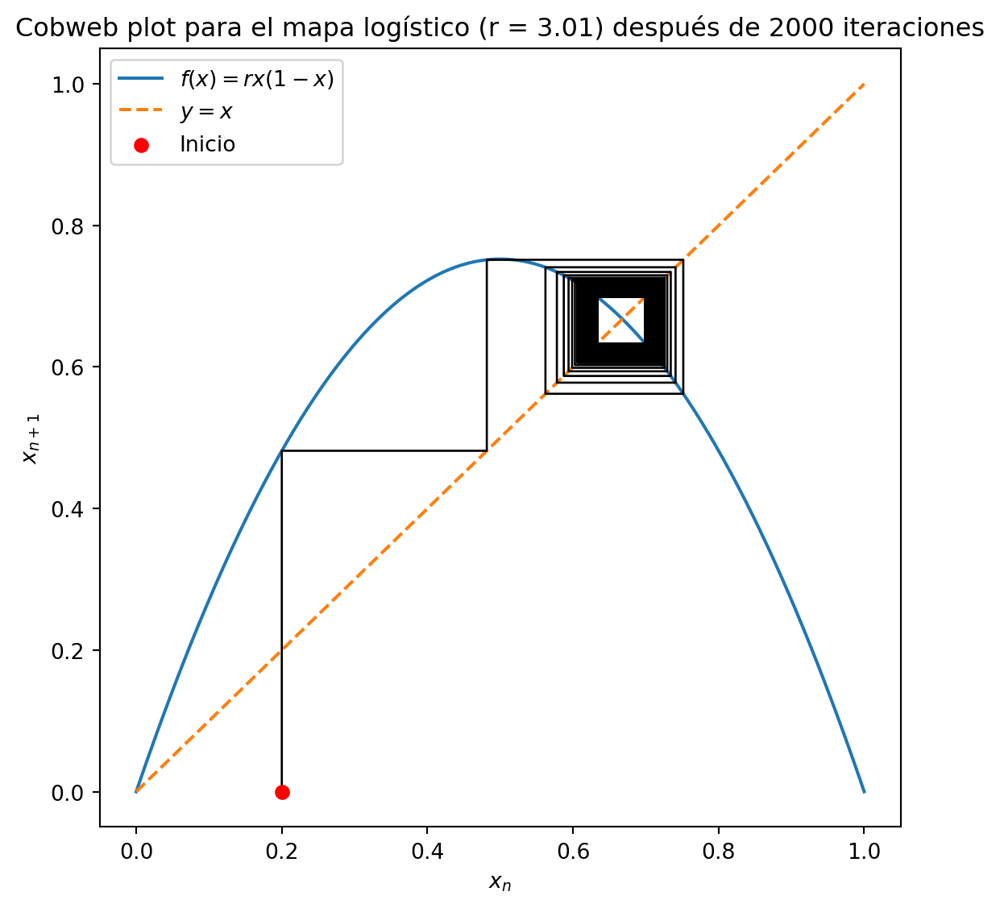
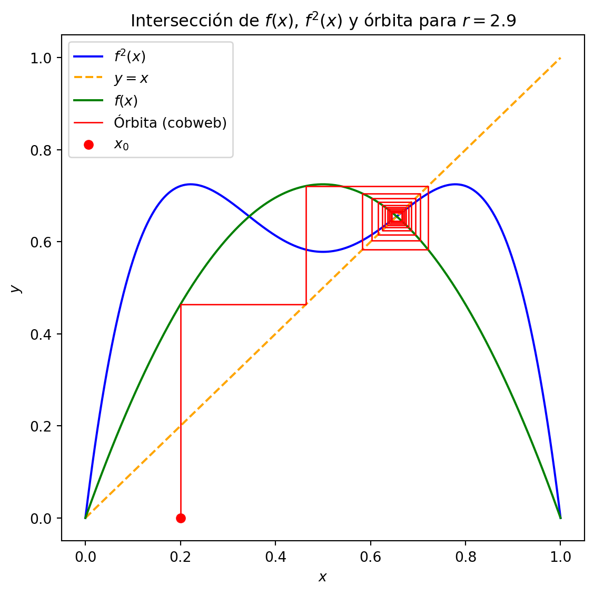
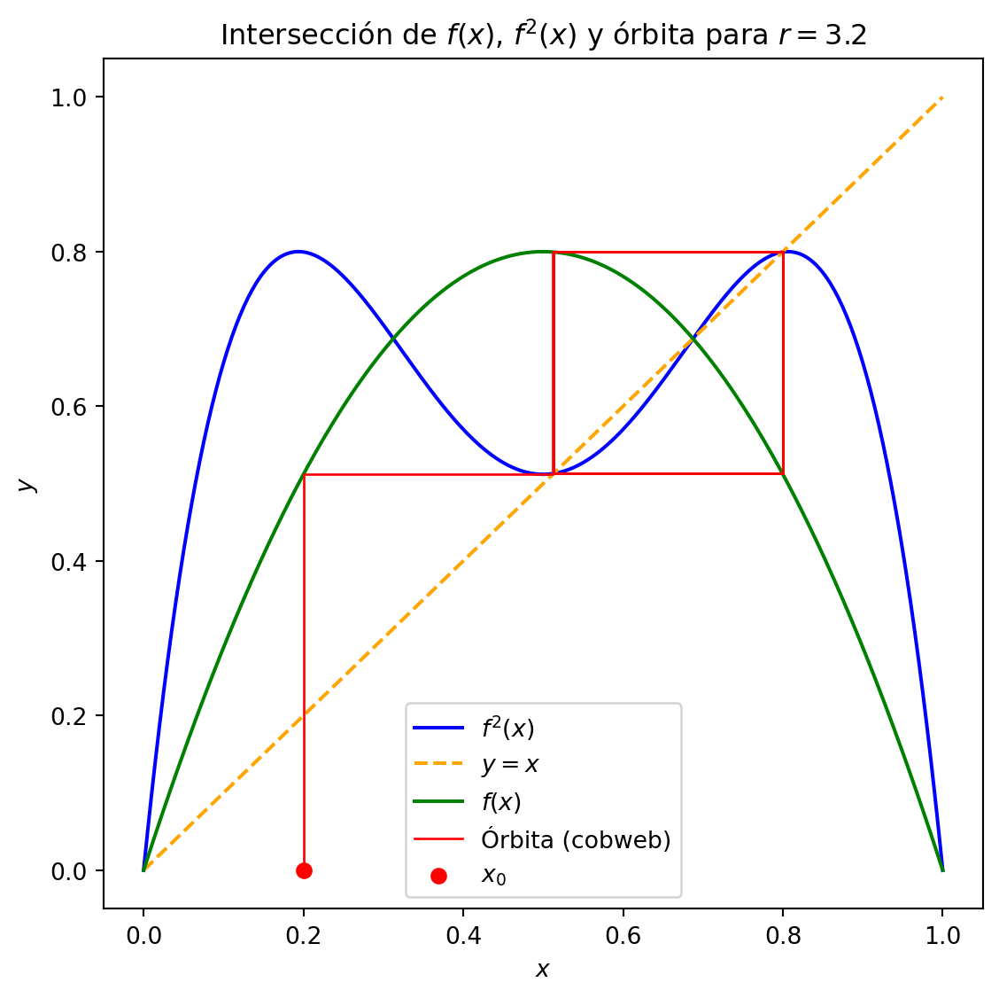
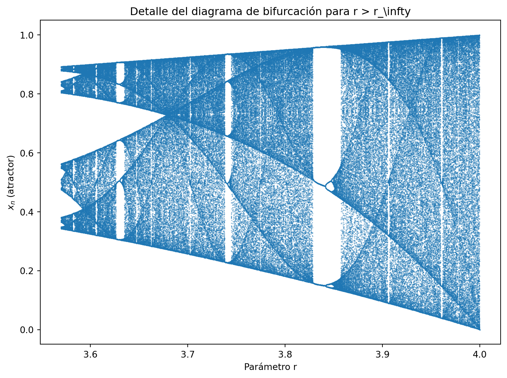
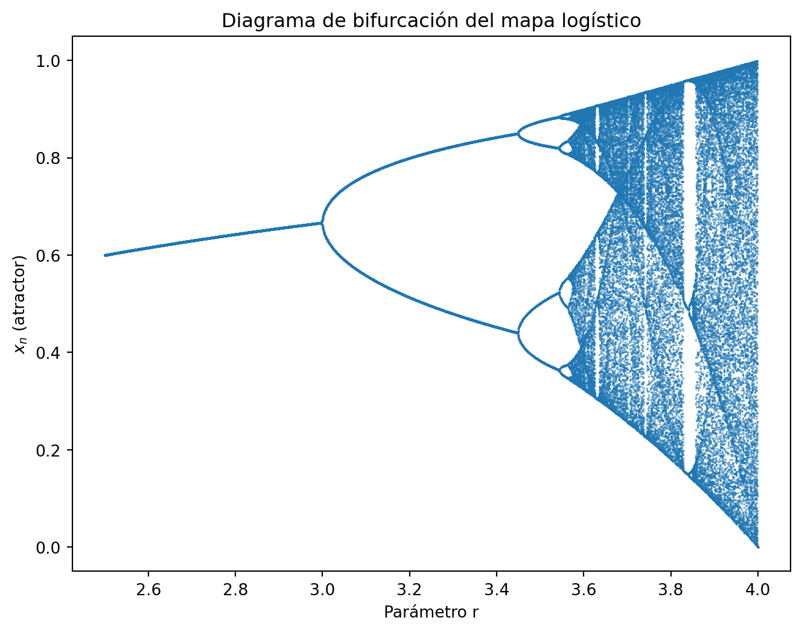

El mapa logístico es un modelo discreto que, con una única ecuación, describe la evolución de una población normalizada \(x_n\) paso a paso y muestra comportamientos que van desde la convergencia hasta el caos.
Se define mediante la iteración:
\[
x_{n+1} = r\,x_n\,(1 - x_n)
\]
\(x_n \in [0,1]\): población normalizada en la iteración \(n\).
\(r\): parámetro de control o tasa de crecimiento (capacidad reproductiva).
Nota: Para garantizar que \(x_{n+1} \in [0,1]\), se restringe \(r\) a \(0 < r \le 4\).
5.2 2. Breve historia
Ecuación continua: proviene de la ecuación logística diferencial, usada en biología para modelar el crecimiento con límite de recursos.
Discretización: Robert May (1976) introdujo su forma iterada y mostró que, pese a la regla sencilla, su dinámica es muy rica.
5.3 3. Forma y dominio de la función
La función asociada es:
\[
f(x) = r\,x\,(1 - x)
\]
Parábola invertida: abre hacia abajo.
Punto máximo:
Se alcanza en \(x = 1/2\).
Valor máximo: \(f(1/2) = r/4\).
Dominio y recorrido:
Dominio: \(x \in [0,1]\).
Para \(0 < r \le 4\), el recorrido queda en \([0,1]\).
5.4 4. Puntos fijos y estabilidad
5.5 Cálculo de la derivada
Partimos de la función del mapa logístico:
\[
f(x) = r\,x\,(1 - x).
\]
Para obtener su derivada:
Aplicamos la regla del producto: \[
f'(x) = r \frac{d}{dx}\bigl[x(1 - x)\bigr]
= r\bigl[(1 - x) + x(-1)\bigr].
\]
Si \(\lvert f'(x^*)\rvert < 1\), entonces \(\lvert x_{n+1} - x^*\rvert < \lvert \delta\rvert\). Cada iteración reduce la desviación: el punto fijo atrae las trayectorias (es estable).
Si \(\lvert f'(x^*)\rvert > 1\), la desviación crece y las trayectorias se alejan del punto fijo (es inestable).
En resumen:
\[
\lvert f'(x^*)\rvert < 1
\quad\Longrightarrow\quad
\text{$x^*$ es estable}.
\]
Un punto fijo\(x^*\) satisface:
\[
f(x^*) = x^*.
\]
Para el mapa logístico:
\(x^*_1 = 0\).
\(x^*_2 = 1 - 1/r\) (si \(r > 1\)).
La derivada es:
\[
f'(x) = r(1 - 2x).
\]
Un punto fijo es estable si \(\lvert f'(x^*)\rvert < 1\). Una perturbación \(\delta\) en \(x_n = x^* + \delta\) evoluciona como:
\[
x_{n+1} - x^* \approx f'(x^*)\,\delta,
\]
por lo que si \(\lvert f'(x^*)\rvert < 1\), la desviación disminuye.
En \(x^*_1=0\):\(f'(0)=r\). Estable si \(0 < r < 1\).
En \(x^*_2=1-1/r\):\(f'(x^*_2)=2-r\). Estable si \(\lvert2-r\rvert<1\) → \(1 < r < 3\).
Resumen de convergencia:
\(0 < r < 1\): converge a \(x=0\).
\(1 < r < 3\): converge a \(x=1-1/r\).
import numpy as npimport matplotlib.pyplot as plt# Parámetrosr =0.99x0 =0.5n_iter =50# Función logísticadef f(x): return r * x * (1- x)# Valores de x para la curvax_vals = np.linspace(0, 1, 400)y_vals = f(x_vals)# Iteraciones para el cobwebx_cobweb = [x0]y_cobweb = [0]x, y = x0, 0for _ inrange(n_iter): y = f(x) x_cobweb.append(x) y_cobweb.append(y) x = y x_cobweb.append(x) y_cobweb.append(x)# Graficarplt.figure(figsize=(6,6))plt.plot(x_vals, y_vals, label='$f(x)=r x(1-x)$')plt.plot(x_vals, x_vals, '--', label='$y=x$')plt.plot(x_cobweb, y_cobweb, color='black', linewidth=1)plt.scatter(x0, 0, color='red', zorder=5, label='Inicio')plt.title('Cobweb plot para el mapa logístico (r = 0.99)')plt.xlabel('$x_n$')plt.ylabel('$x_{n+1}$')plt.legend()plt.tight_layout()plt.show()
import numpy as npimport matplotlib.pyplot as plt# Parámetrosr =2.99x0 =0.01n_iter =200# Función logísticadef f(x): return r * x * (1- x)# Valores de x para la curvax_vals = np.linspace(0, 1, 400)y_vals = f(x_vals)# Iteraciones para el cobwebx_cobweb = [x0]y_cobweb = [0]x, y = x0, 0for _ inrange(n_iter): y = f(x) x_cobweb.append(x) y_cobweb.append(y) x = y x_cobweb.append(x) y_cobweb.append(x)# Graficarplt.figure(figsize=(6,6))plt.plot(x_vals, y_vals, label='$f(x)=r x(1-x)$')plt.plot(x_vals, x_vals, '--', label='$y=x$')plt.plot(x_cobweb, y_cobweb, color='black', linewidth=1)plt.scatter(x0, 0, color='red', zorder=5, label='Inicio')plt.title('Cobweb plot para el mapa logístico (r = 2.99) después de 200 iteraciones')plt.xlabel('$x_n$')plt.ylabel('$x_{n+1}$')plt.legend()plt.tight_layout()plt.show()
import numpy as npimport matplotlib.pyplot as plt# Parámetrosr =3.01x0 =0.2n_iter =2000# Función logísticadef f(x): return r * x * (1- x)# Valores de x para la curvax_vals = np.linspace(0, 1, 400)y_vals = f(x_vals)# Iteraciones para el cobwebx_cobweb = [x0]y_cobweb = [0]x, y = x0, 0for _ inrange(n_iter): y = f(x) x_cobweb.append(x) y_cobweb.append(y) x = y x_cobweb.append(x) y_cobweb.append(x)# Graficarplt.figure(figsize=(6,6))plt.plot(x_vals, y_vals, label='$f(x)=r x(1-x)$')plt.plot(x_vals, x_vals, '--', label='$y=x$')plt.plot(x_cobweb, y_cobweb, color='black', linewidth=1)plt.scatter(x0, 0, color='red', zorder=5, label='Inicio')plt.title('Cobweb plot para el mapa logístico (r = 3.01) después de 2000 iteraciones')plt.xlabel('$x_n$')plt.ylabel('$x_{n+1}$')plt.legend()plt.tight_layout()plt.show()

5.7 4. Primera Bifurcación: Duplicación de Período en \(r = 3\)
En \(r = 3\), la derivada en el punto fijo \(x^* = 1 - \frac{1}{r}\) se vuelve \(-1\), lo cual genera una órbita de período 2.
Surgen dos nuevos puntos \(p\) y \(q\) que no son puntos fijos, sino puntos de período 2 tales que:
\[
f(p) = q, \quad f(q) = p
\]
Esto significa que:
\[
f(f(p)) = p
\]
Lo cual implica que \(p\) es un punto fijo del mapa iterado \(f^2\).
Dado que \(f(x) = r x (1 - x)\), podemos escribir:
\[
f(p) = r p (1 - p)
\]
Entonces:
\[
f(f(p)) = r \cdot f(p) \cdot (1 - f(p)) = r \cdot [r p (1 - p)] \cdot \left[1 - r p (1 - p)\right]
\]
Queremos encontrar los puntos de período 2, así que igualamos:
\[
f(f(p)) = p
\]
Desarrollando completamente:
\[
r^2 p (1 - p)(1 - r p (1 - p)) = p
\]
Pasando todo al mismo lado:
\[
r^2 p (1 - p)(1 - r p (1 - p)) - p = 0
\]
Factorizamos \(p\):
\[
p \left[ r^2 (1 - p)(1 - r p (1 - p)) - 1 \right] = 0
\]
Una de las soluciones es \(p = 0\) (punto fijo trivial), pero las otras soluciones corresponden a los puntos de período 2.
Expandimos el polinomio:
\[
f(f(p)) = r^2 p (1 - p)(1 - r p (1 - p)) = p
\]
Expandimos paso a paso:
\(f(p) = r p (1 - p)\)
\(1 - f(p) = 1 - r p (1 - p)\)
\((1 - p)(1 - r p (1 - p)) = 1 - p - r p (1 - p) + r p^2 (1 - p)\)
Multiplicamos todo por \(r^2 p\)
Resulta en un polinomio de cuarto grado en \(p\)
Este polinomio tiene hasta 4 raíces reales, de las cuales dos corresponden a los nuevos puntos de período 2. Las otras dos pueden ser los puntos fijos ya conocidos o raíces no relevantes dinámicamente.
import numpy as npimport matplotlib.pyplot as plt# Parámetro y condición inicialr =2.9x0 =0.2n_iter =20# Definición de funcionesdef f(x): return r * x * (1- x)def f2(x): return f(f(x))# Dominiox_vals = np.linspace(0, 1, 400)y_f = f(x_vals)y_f2 = f2(x_vals)# Construcción del cobweb sobre fx_coords = [x0]y_coords = [0]x, y = x0, 0for _ inrange(n_iter): y = f(x) x_coords.extend([x, y]) y_coords.extend([y, y]) x = y# Plotplt.figure(figsize=(6, 6))plt.plot(x_vals, y_f2, color='blue', label='$f^2(x)$')plt.plot(x_vals, x_vals, color='orange', linestyle='--', label='$y = x$')plt.plot(x_vals, y_f, color='green', label='$f(x)$')plt.plot(x_coords, y_coords, color='red', linewidth=1, label='Órbita (cobweb)')plt.scatter([x0], [0], marker='o', color='red', label='$x_0$')plt.title('Intersección de $f(x)$, $f^2(x)$ y órbita para $r=2.9$')plt.xlabel('$x$')plt.ylabel('$y$')plt.legend()plt.tight_layout()plt.show()
import numpy as npimport matplotlib.pyplot as plt# Parámetro y condición inicialr =3x0 =0.2n_iter =2000# Definición de funcionesdef f(x): return r * x * (1- x)def f2(x): return f(f(x))# Dominiox_vals = np.linspace(0, 1, 400)y_f = f(x_vals)y_f2 = f2(x_vals)# Construcción del cobweb sobre fx_coords = [x0]y_coords = [0]x, y = x0, 0for _ inrange(n_iter): y = f(x) x_coords.extend([x, y]) y_coords.extend([y, y]) x = y# Plotplt.figure(figsize=(6, 6))plt.plot(x_vals, y_f2, color='blue', label='$f^2(x)$')plt.plot(x_vals, x_vals, color='orange', linestyle='--', label='$y = x$')plt.plot(x_vals, y_f, color='green', label='$f(x)$')plt.plot(x_coords, y_coords, color='red', linewidth=1, label='Órbita (cobweb)')plt.scatter([x0], [0], marker='o', color='red', label='$x_0$')plt.title('Intersección de $f(x)$, $f^2(x)$ y órbita para $r=3$')plt.xlabel('$x$')plt.ylabel('$y$')plt.legend()plt.tight_layout()plt.show()

import numpy as npimport matplotlib.pyplot as plt# Parámetro y condición inicialr =3.1x0 =0.2n_iter =20# Definición de funcionesdef f(x): return r * x * (1- x)def f2(x): return f(f(x))# Dominiox_vals = np.linspace(0, 1, 400)y_f = f(x_vals)y_f2 = f2(x_vals)# Construcción del cobweb sobre fx_coords = [x0]y_coords = [0]x, y = x0, 0for _ inrange(n_iter): y = f(x) x_coords.extend([x, y]) y_coords.extend([y, y]) x = y# Plotplt.figure(figsize=(6, 6))plt.plot(x_vals, y_f2, color='blue', label='$f^2(x)$')plt.plot(x_vals, x_vals, color='orange', linestyle='--', label='$y = x$')plt.plot(x_vals, y_f, color='green', label='$f(x)$')plt.plot(x_coords, y_coords, color='red', linewidth=1, label='Órbita (cobweb)')plt.scatter([x0], [0], marker='o', color='red', label='$x_0$')plt.title('Intersección de $f(x)$, $f^2(x)$ y órbita para $r=3.1$')plt.xlabel('$x$')plt.ylabel('$y$')plt.legend()plt.tight_layout()plt.show()

import numpy as npimport matplotlib.pyplot as plt# Parámetro y condición inicialr =3.2x0 =0.2n_iter =20# Definición de funcionesdef f(x): return r * x * (1- x)def f2(x): return f(f(x))# Dominiox_vals = np.linspace(0, 1, 400)y_f = f(x_vals)y_f2 = f2(x_vals)# Construcción del cobweb sobre fx_coords = [x0]y_coords = [0]x, y = x0, 0for _ inrange(n_iter): y = f(x) x_coords.extend([x, y]) y_coords.extend([y, y]) x = y# Plotplt.figure(figsize=(6, 6))plt.plot(x_vals, y_f2, color='blue', label='$f^2(x)$')plt.plot(x_vals, x_vals, color='orange', linestyle='--', label='$y = x$')plt.plot(x_vals, y_f, color='green', label='$f(x)$')plt.plot(x_coords, y_coords, color='red', linewidth=1, label='Órbita (cobweb)')plt.scatter([x0], [0], marker='o', color='red', label='$x_0$')plt.title('Intersección de $f(x)$, $f^2(x)$ y órbita para $r=3.2$')plt.xlabel('$x$')plt.ylabel('$y$')plt.legend()plt.tight_layout()plt.show()
es la constante de Feigenbaum, universal en mapas unimodales.
5.11 8. Diagrama de bifurcación
import numpy as npimport matplotlib.pyplot as pltr_values = np.linspace(2.5, 4.0, 1500)iterations, last =1000, 100r_plot, x_plot = [], []for r in r_values: x =0.5for _ inrange(iterations): x = r * x * (1- x)for _ inrange(last): x = r * x * (1- x) r_plot.append(r) x_plot.append(x)plt.figure(figsize=(8,6))plt.plot(r_plot, x_plot, '.', markersize=0.5)plt.title('Diagrama de bifurcación del mapa logístico')plt.xlabel('Parámetro r')plt.ylabel('$x_n$ (atractor)')plt.show()

5.12 9. Caos y ventanas periódicas
Cuando el parámetro supera el umbral de acumulación de bifurcaciones
\[
r_\infty \approx 3.56995,
\]
el mapa entra en un régimen caótico caracterizado por varias propiedades fundamentales:
Sensibilidad a las condiciones iniciales.
Dos valores iniciales muy cercanos \(x_0\) y \(x_0+\epsilon\) se separan exponencialmente con el tiempo.
Aun en la región caótica, aparecen ventanas periódicas donde se observan ciclos de período fijo (p.ej., ciclo 3 cerca de \(r\approx3.828\)).
Teorema Li–Yorke.
La existencia de un ciclo de período 3 implica ciclos de todos los períodos.
5.12.1 9.1 Diagrama detallado para \(r > r_\infty\)
import numpy as npimport matplotlib.pyplot as pltr_inf =3.56995r_values = np.linspace(r_inf, 4.0, 1200)iterations, last =1000, 200r_plot, x_plot = [], []for r in r_values: x =0.5for _ inrange(iterations): x = r * x * (1- x)for _ inrange(last): x = r * x * (1- x) r_plot.append(r) x_plot.append(x)plt.figure(figsize=(8,6))plt.plot(r_plot, x_plot, '.', markersize=0.4)plt.title('Detalle del diagrama de bifurcación para r > r_\infty')plt.xlabel('Parámetro r')plt.ylabel('$x_n$ (atractor)')plt.tight_layout()plt.show()

5.13 10. Conclusión y siguientes pasos Conclusión y siguientes pasos
Implementa el mapa en Python, R o Excel.
Experimenta con distintos \(r\) y \(x_0\).
Visualiza cobweb plots y diagramas de bifurcación.
Estudia la constante de Feigenbaum en otros mapas unimodales.